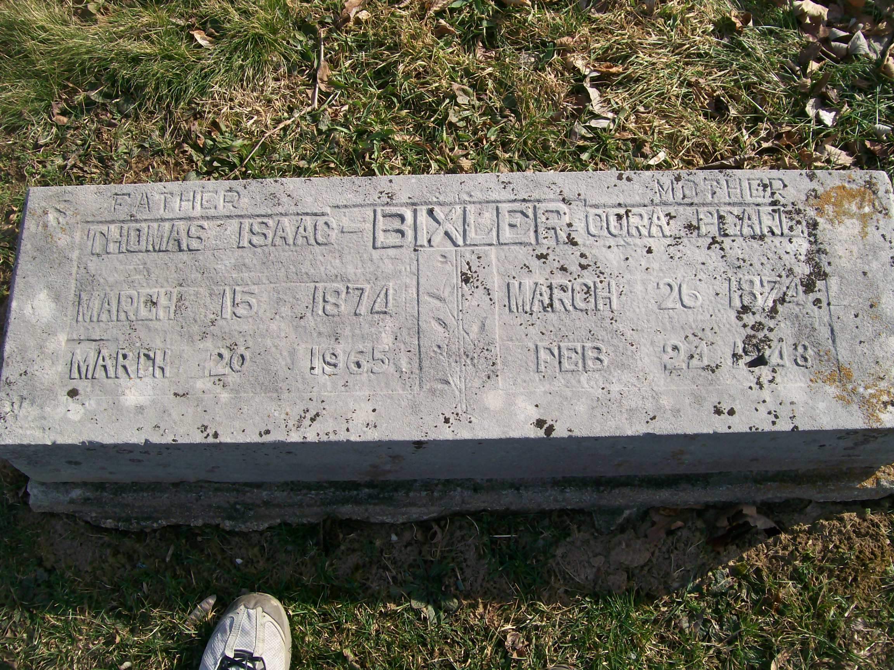

Cora Pearl Bixler (née Bufford) 1874 - 1948
[ Home ] | [ Calendar ] | [ Surnames Index ] | [ Census Index ] | [ Family History ]Cora Bufford, the wife of Thomas Isaac Bixler (the third cousin three-times-removed on the mother's side of Nigel Horne), was born in Fort Wayne, Allen, Indiana, USA on Mar 26, 18741 and married Thomas (a farmer with whom she had 12 children: Rodney Jay, Ralph Voris, Thomas Isaac, Louis Edward, Pearl Luella, Willard Wallace, Nellie Mae, Edward Gabrial, Jennie, Alice Vesper, Allen Ellsworth and Rosetta) in Fort Wayne on Apr 2, 18922.
During her life, she was living in Washington, Owen, Indiana, USA on Apr 15, 19104; and in Clay, Indiana on Feb 10, 19203.
She died on Feb 24, 1948 in Owen1 and was buried in Spencer, Indiana after Feb 24, 19481.
Children
- Rodney Jay was born on Sep 30, 1894
- Ralph Voris was born on Sep 30, 1896
- Thomas Isaac was born on Jan 19, 1899
- Louis Edward was born on Feb 26, 1901
- Pearl Luella was born on Aug 29, 1903
- Willard Wallace was born on Oct 1, 1905
- Nellie Mae was born on May 2, 1908
- Edward Gabrial was born on May 13, 1910
- Jennie was born on Nov 24, 1912
- Alice Vesper was born on Mar 25, 1914
- Allen Ellsworth was born on Nov 9, 1916
- Rosetta was born on Oct 5, 1919
Citations
- U.S., Find A Grave Index, 1600s-Current Ancestry.com Operations, Inc.
- United States Marriages - Findmypast
- US Census 1920 - Findmypast (was age 45 and the wife of the head of the household)
- US Census 1910 - Findmypast (was age 36 and the wife of the head of the household)
Media
Thomas Bixler - Cora Buford - headstone

Cora Pearl Bufford

Indiana, Marriages, 1780-1992 - B~R_328052819
Family Tree

Generated by ged2site. Last updated on Jun 11, 2024